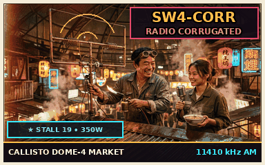

TACTILE STATION PRESET MATRIX
BANK A • 8 CHANNELS
WIDEBAND TUNER & BARYCENTRIC VFO
PLL LOCKED
11,410.000
AM-W
MEASURED: 11,410.042 kHz
DOPPLER Δf: +42.0 Hz
MULTI-MODE FREQUENCY MAP & SPECTRUM SCANNER
SIGNAL & VISUAL CORRELATOR • CAM-104
CALLISTO DOME-4
SHORTWAVE AUDIO DEMODULATOR & INTERVAL SIGNAL AUDITION
READY
INTERVAL SIGNAL: ELECTRIC NIGHT-MARKET LUTE
LANG: PORT-CANTONESE / MANDARIN
GALACTIC ASTROMETRY, CERES TRIANGULATION & SIGNAL QUALITY
3D CELESTIAL SPHERE & SKY ASTROMETRY
BEAM AZIMUTH (l)
212.4°
PLANE INCL (b)
-4.2°
RADIAL RANGE
0.66 ly
SPIRAL SECTOR
Orion Spur
CARRIER S-METER:
S9+18 dB
QUALITY INDEX: Q-8.4
ITU / OORT SINPO RECEPTION MERIT
SINPO 4-3-4-3-4
TX RIG
350 W Tetrode
ANTENNA
½λ Pipe Dipole
RX BEAM
4-Ring Phased Array
IN-STREAM SSTV eQSL VERIFICATION BAY
QSL #0165-RC

VERIFIED DX MEMORY & LOG
ACTIVE ENTRY